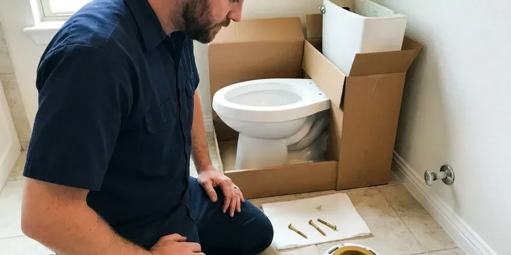
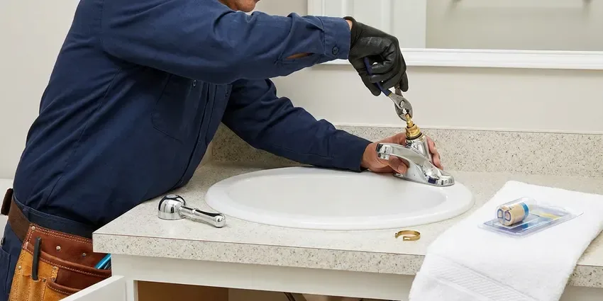

Shower Installation in Springfield, OR
A new shower starts with the plumbing behind the tile. JFL Plumbing installs shower valves, pans and drains across Springfield, OR for remodels and new builds.
- Clear Pricing
- Fast Local Service
- Expert Plumbers
- Licensed, Insured Plumbers
Professional Shower Installation Services in Springfield, OR.
Call JFL Plumbing today for a free estimate on your new shower.
Your Trusted Partner for Shower Installation in Springfield, OR
JFL Plumbing works on tub-to-shower conversions, walk-in showers, curbless showers and prefab shower units. On slab foundations, we cut and reroute drains when shower locations change. We also handle permits and inspections when your project requires them.
Our expertise includes:
- Careful handling of water supply and drainage
- Pressure-balance and thermostatic valve rough-in for new showers
- Handle complex plumbing rough-ins for new showers

Additional Bathroom Plumbing Services in Springfield, OR
From toilets to showers, our bathroom plumbing team in Springfield, OR handles repairs, installs, and upgrades with tidy, code-compliant work.



Toilet Installation in Springfield


Professional faucet repair, Springfield


Customers
Why Choose JFL Plumbing for Shower Installation in Springfield, OR?
A correctly installed shower improves your daily routine and protects your home from water damage. We focus on durable connections and correct water sealing to avoid common plumbing problems.
- Permits Handled, We pull permits and coordinate inspections when needed.
- Correct Slope, Pans and drains are set so water drains fully without puddles.
- Quality Materials, We use only high-grade plumbing components designed for long life and performance in local water conditions.
Citywide Coverage
JFL Plumbing serves every neighborhood of Springfield and surrounding areas for all shower installation needs. Whether you are near the center of town or on the outskirts, our team is ready to provide prompt, reliable service.
Experienced Team
Our team of plumbers has broad experience with all types of shower installations, from basic tub-shower combos to intricate custom designs. We stay current on the latest plumbing technologies and installation techniques.
Safety-First Approach
Proper venting and waterproofing are essential for any shower installation. Our plumbers make sure all connections are secure and sealed correctly, preventing mold growth and water damage. Damp crawlspaces are common, and constant moisture can rust exposed metal pipe and fittings over time.
Trusted Certified Springfield Plumbing Services Professionals
At JFL Plumbing, we take pride in providing certified plumbing services throughout Springfield, OR. Backed by leading industry credentials, our experienced plumbers combine technical skill with genuine customer care. Whether it is repair, installation, or maintenance, we follow strict safety and quality standards to deliver long-lasting results you can trust.
Call Us Now PHCC Plumbing Contractor Recognition
PHCC Plumbing Contractor Recognition Better Business Bureau (BBB) Accreditation
Better Business Bureau (BBB) Accreditation Angi Certified Pro
Angi Certified Pro ISO 9001 Quality Management Certification
ISO 9001 Quality Management CertificationCustom Shower Installation Services in Springfield, OR
New Construction Shower Installation in Springfield, OR
For new homes and additions, we rough in shower valves, supply lines and drains during framing. Valves are set to depth for the planned wall finish, and drains are located for the chosen pan. We pass rough-in inspections and return to install trim after tile. Our scheduling keeps your build on schedule.

Cost-Effective Shower Upgrades in Springfield, OR
Investing in a new shower can significantly improve your home's value and comfort. JFL Plumbing helps homeowners in Springfield choose cost-effective shower solutions that fit their budget and needs. We go over various options, from basic, durable units to more elaborate, water-saving models. Our transparent pricing means you know the full cost upfront, allowing you to make an informed decision without hidden fees.
Rain and Multi-Head Shower Installation in Springfield
Rain showerheads, body sprays and dual heads need careful planning for valve capacity and water pressure. We install thermostatic valves with volume controls and diverters to run multiple outlets. We also confirm your water heater can handle higher flow. The result is a spa-like shower that works the way it should.
Emergency Shower Replacement in Springfield
While installation is often planned, sometimes a damaged or severely leaking shower requires immediate replacement. JFL Plumbing provides emergency shower replacement services to quickly address critical failures. We can often install a new, standard shower unit to restore your bathroom without delay. Our rapid response team works to limit water damage and inconvenience.
Curbless Shower Installation in Springfield
Curbless showers have no step, which makes them easier to use and gives a modern look. They require a recessed floor and careful drain placement, often with a linear drain. On a slab, we may need to lower the floor in the shower area. We work closely with your contractor to plan the slope and waterproof layers.
Shower Valve & Fixture Installation in Springfield, OR
Beyond the main shower unit, we also install new shower valves, diverters, and various fixtures. This includes pressure-balancing valves to prevent scalding, thermostatic valves for consistent temperature, and different showerhead types like rain showers or handheld units. Our team makes sure all connections are watertight and that the fixtures operate smoothly, enhancing your showering experience. We can upgrade outdated fixtures to newer, more water-wise models.
Standard Shower Stall Installation in Springfield
JFL Plumbing installs all types of standard shower stalls, from fiberglass units to acrylic enclosures. We make sure of proper leveling, sealing, and connection to your existing plumbing system. Our team handles the entire process, including securing the base and connecting the drain line, to prevent future leaks and ensure stability. We also verify that water pressure is right for your new showerhead.

Shower Valve & Trim Installation in Springfield, OR
The shower valve is the heart of your shower's operation, controlling water temperature and flow. JFL Plumbing installs all types of shower valves, including pressure-balancing, thermostatic, and diverter valves. We also install new trim kits, including handles, spouts, and showerheads. Proper valve installation prevents scalding and provides consistent water temperature, a key comfort feature for your home in Springfield.
Shower Installation Near Me in Springfield, OR
When you search for shower installation near me in Springfield, OR, JFL Plumbing is your local, dependable choice. We pride ourselves on fast response times and thorough service, ensuring your new shower is installed correctly and efficiently. Our location allows us to quickly send a skilled plumber to your doorstep.
When you search for shower installation near me, you want a plumber who coordinates well with your remodel. JFL Plumbing schedules rough-in and trim visits around your contractor. That keeps your project on track.
JFL Plumbing at a Glance
- Licensed and insured plumbers serving Springfield, OR
- 24/7 emergency service with same-day scheduling
- Clear written estimates, no hidden fees
- 4.8-star rated by 657+ Oregon customers
Springfield Map
Springfield Information
- Population
- 61,085
- Area codes
- 541/458/447
- Service area
- Springfield and communities within 40 miles
- Nearby
- Eugene, Corvallis, Albany, Salem
Many rural homes rely on private wells, and owners around Springfield benefit from testing for iron, hardness and other typical concerns. Hillside homes can face soil movement after heavy rain, which can shift buried water and sewer lines. Proper shower installation in Springfield, OR helps prevent leaks that can lead to foundation and structural issues.
Expert Services
Trust our professionals for reliable JFL Plumbing solutions in Springfield, OR.
Our Specialized Plumbing Services in Springfield, OR
At JFL Plumbing, we provide a complete range of plumbing services across Springfield, OR. From leak detection to full system installations, our team ensures fast, precise, and affordable service for both residential and commercial properties. Explore our core services below:


How Our Shower Installation Process Works in Springfield, OR
JFL Plumbing follows a structured approach to every shower installation, guaranteeing quality results for your Springfield home.
Request a Quote
Start by calling JFL Plumbing at (971) 333-7694 or filling out our online form to schedule an initial consultation. We will discuss your shower installation needs and preferences.
Site Assessment
Our plumber visits your home in Springfield to check the existing plumbing, measure the space, and discuss suitable shower options. We provide a detailed, clear estimate.
Professional Installation
Our licensed technicians expertly install your new shower, handling all plumbing, sealing, and finishing work. We make sure it meets all local codes and works properly.
Frequently Asked Questions About Shower Installation in Springfield
The cost of shower installation in Springfield varies widely, usually ranging from $1,500 to $6,000 for standard units, and $5,000 to $15,000 or more for custom or luxury systems. Factors like shower type, materials, plumbing changes, and labor complexity affect the final price. We provide upfront, detailed quotes after assessing your specific project.
Absolutely. We specialize in making the most of space, even in smaller bathrooms common in older homes. We can recommend compact shower stalls, corner units, or custom designs that maximize function without overcrowding your bathroom. Our goal is to create a comfortable and efficient shower area.
Yes, JFL Plumbing understands that a new shower installation can be a big investment, and we offer various financing options to help make your project more affordable. Please contact our team at (971) 333-7694 to discuss the available plans that can fit your budget and allow you to get the shower you need without delay.
Large rain heads and multiple outlets use more hot water. We check your water heater size and recovery rate and recommend upgrades if needed.
Yes, bathtub-to-shower conversions are a common service we offer. This involves removing the existing bathtub and installing a new shower base, walls, and fixtures. It is a great way to update your bathroom, improve accessibility, and often increase property value. We handle all plumbing adjustments for a seamless conversion.
Yes, in most cases, significant plumbing work like new shower installation or relocation requires a plumbing permit in Springfield to ensure compliance with local building codes. JFL Plumbing handles all required permit applications on your behalf, ensuring your installation is fully compliant.
Pressure-balance valves keep the hot and cold ratio steady when pressure changes. Thermostatic valves control the actual temperature and allow separate volume control, which works well for multi-head showers.
We install various shower drain types, including standard round drains, square drains, and modern linear drains. The choice often depends on the shower pan design and style preference. Proper drain installation is important to prevent backups and ensure efficient water removal, especially where mineral-heavy water can leave deposits.
What People Are Saying About Our Plumbing Experts?

Laura S.
I scheduled a water heater replacement, and the team made the process smooth and affordable. The new unit works perfectly, and they cleaned up after completing the job.
Water Heater Replacement · Corvallis, OR
Daniel K.
A pipe burst at 11 pm and they actually answered. The plumber showed up within the hour, shut everything down, and had us back to normal the next morning. Could not ask for more.
Emergency Plumbing · Keizer, OR
Mark T.
When our office needed drain cleaning, JFL Plumbing provided quick, reliable service. The plumber arrived on time and made sure every drain flowed perfectly before leaving. Very satisfied.
Drain Cleaning · Corvallis, ORSofia M.
Two new toilets installed in one visit, no mess left behind, and the tech even adjusted a faucet he noticed was dripping. Fair pricing and really friendly.
Toilet Installation · Corvallis, OR
Patricia H.
We had a slab leak that two other companies could not find. JFL Plumbing located it in under an hour, explained our options, and the price matched the quote to the dollar.
Slab Leak Repair · Albany, OR
James P.
Our commercial plumbing system had a leak under the sink, and JFL Plumbing handled it professionally. The plumbers arrived quickly and restored everything without disruption to our customers.
Commercial Plumbing · Albany, OR